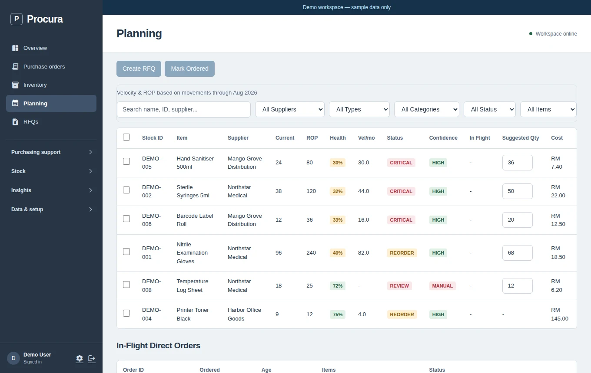

PIMS
Procurement and inventory workflows for a veterinary hospital, from internal requests to receipt and stock take.
Inventory operationsView project: PIMS
Know what needs buying. Keep purchasing organised.
Inventory, suppliers, reorder planning and purchase orders in one connected application.
Actual Procura UI; isolated fictional demo records. Screenshot gallery only, not an interactive application.



Screenshot unavailable. Extract the complete preview ZIP with its assets, then reopen this page.
Stock levels, supplier information and purchasing decisions are difficult to follow when they live in separate spreadsheets and conversations.
I built a procurement application that connects inventory, suppliers, purchase orders, requests for quotation and planning. It brings the buying workflow into one place instead of treating each document as a separate task.
Go serves the web interface and embeds its assets in a single binary. SQLite keeps the inventory and purchasing records together. Spreadsheet import and unit-of-measure mappings support existing operational data.
The screenshots use a separate seeded demo database. No supplier is contacted and no purchase is submitted from this portfolio. Operational records and client results are not published here.
If this is close to a problem you have, describe the work—not just the features you want.
Discuss your project